Assignments
Assignment 1
Collaborators: Sara Whitelaw, Halle Wasser
Problem 1
Install the datasets package on the console below using install.packages("datasets"). Now load the library.
library(datasets)Load the USArrests dataset and rename it dat. Note that this dataset comes with R, in the package datasets, so there’s no need to load data from your computer. Why is it useful to rename the dataset?
dat<-USArrestsIt is useful to rename the dataset because it makes the file easier to access and use in later coding functions.
Problem 2
Use this command to make the state names into a new variable called State.
dat$state <- tolower(rownames(USArrests))This dataset has the state names as row names, so we just want to make them into a new variable. We also make them all lower case, because that will help us draw a map later - the map function requires the states to be lower case.
List the variables contained in the dataset USArrests.
names(dat)## [1] "Murder" "Assault" "UrbanPop" "Rape" "state"The variables are Murder, Assault, UrbanPop, and Rape.
Problem 3
What type of variable (from the DVB chapter) is Murder?
Answer: Quantitative Variable
What R Type of variable is it?
Answer: Numeric in a list form
Problem 4
What information is contained in this dataset, in general? What do the numbers mean?
Answer: This data set gives us information on the frequency of murder, assault, and rape arrests per 100,000 residents in each state of the US in 1973. It also gives information on the percent of the population living in urban areas of each state.
Problem 5
Draw a histogram of Murder with proper labels and title.
hist(dat$Murder,main="Histogram of Murder Arrests in 1973", xlab="Murder Arrests In A State per 100,000 Residents", ylab="Frequency")Problem 6
Please summarize Murder quantitatively. What are its mean and median? What is the difference between mean and median? What is a quartile, and why do you think R gives you the 1st Qu. and 3rd Qu.?
summary(dat$Murder)## Min. 1st Qu. Median Mean 3rd Qu. Max.
## 0.800 4.075 7.250 7.788 11.250 17.400The mean of the Murder data is 7.788 and the median is 7.25. The mean is the average value of the data set. In other words, the mean is all of the numbers in a data set added together and then divided by the total amount of numbers present in the set. In contrast, the median is the middle value of the data when the numerical data values are ordered from least to greatest. Quartiles of a data set are the 3 values that divide the observed data into even fourths. R gives the 1st and 3rd quartiles to give us insight into the spread of our data.
Problem 7
Repeat the same steps you followed for Murder, for the variables Assault and Rape. Now plot all three histograms together. You can do this by using the command par(mfrow=c(3,1)) and then plotting each of the three.
hist(dat$Assault,main="Histogram of Assault Arrests in USA in 1973", xlab="Assault Arrests In A State per 100,000 Residents", ylab="Frequency")
summary(dat$Assault)## Min. 1st Qu. Median Mean 3rd Qu. Max.
## 45.0 109.0 159.0 170.8 249.0 337.0hist(dat$Rape,main="Histogram of Rape Arrests in USA in 1973", xlab="Rape Arrests In A State per 100,000 Residents", ylab="Frequency")summary(dat$Rape)## Min. 1st Qu. Median Mean 3rd Qu. Max.
## 7.30 15.07 20.10 21.23 26.18 46.00par(mfrow=c(3,1))
hist(dat$Murder,main="Histogram of Murder Arrests in USA in 1973", xlab="Murder Arrests per 100,000 Residents In A State", ylab="Frequency")
hist(dat$Assault,main="Histogram of Assault Arrests in USA in 1973", xlab="Assault Arrests per 100,000 Residents In A State", ylab="Frequency")
hist(dat$Rape,main="Histogram of Rape Arrests in USA in 1973", xlab="Rape Arrests per 100,000 Residents In A State", ylab="Frequency")The mean value for Assault is 170.76 and the median value is 159. The mean value for Rape is 21.232 and the median value is 20.1
What does the command par do, in your own words (you can look this up by asking R ?par)?
Answer: par is used to set or query graphical parameters.
What can you learn from plotting the histograms together?
Answer: We can see that the histograms for Murder and Rape Arrests skew to the left. We can also see that that there are more Assault arrests than Rape arrests, and more Rape arrests than Murder arrests.
Problem 8
In the console below (not in text), type install.packages("maps") and press Enter, and then type install.packages("ggplot2") and press Enter. This will install the packages so you can load the libraries.
Run this code:
library('maps')
library('ggplot2')
ggplot(dat, aes(map_id=state, fill=Murder)) +
geom_map(map=map_data("state")) +
expand_limits(x=map_data("state")$long, y=map_data("state")$lat)
What does this code do? Explain what each line is doing.
Answer: The install.packages command allows us to download and install packages from CRAN-like repositories or from local files. The library command allows one to add the functions installed from the package mentioned above into one’s library so that s/he can use those functions when coding. Lastly, the ggplot command initializes a ggplot object. It can be used to “declare the input data frame for a graphic and the specify the set of plot aesthetics intended to be common throughout all subsequent layers unless specifically overridden” (R). Overall, this set of commands creates a graph showing the frequency of murder arrests in each state, with darker blues corresponding to higher frequencies.
\[\\[2in]\]
Assignment 2
Collaborators: Sara Whitelaw
Problem 1
Load data and set your working directory.
#setwd("/Users/rachaelvillari/Documents/Fall 2021/CRIM250/Assignment 2")Read the data
dat <- read.csv(file = 'dat.nsduh.small.1.csv')What are the dimensions of the dataset?
dim(dat)## [1] 171 7The dimensions are 7 columns by 171 rows
Problem 2
List the variables contained in the dataset.
names(dat)## [1] "mjage" "cigage" "iralcage" "age2" "sexatract" "speakengl"
## [7] "irsex"The variables in this dataset are named mjage, cigage, iralcage, age2, sexatract, speakengl, and irsex.“mjage” gives information on the age at which a respondent first used marijuana or hashish. “cigage” gives information on how old the respondent was when s/he began smoking cigarettes every day. “iralcage” gives the age at which a respondent first tried alcohol. “age2” gives information on the final edited age of the respondent. The age is considered “edited” because there were multiple consistency checks throughout the questionnaire in which the respondent could provide different ages. “irsex” tells us the sex of the respondent (either male or female). “sexatract” provides information on the sexual orientation of the respondent. “speakengl” gives information on how well the respondent speaks English.
What is this dataset about? Who collected the data, what kind of sample is it, and what was the purpose of generating the data? Answer: This dataset gives information about NSDUH, a household interview survey of substance use, substance use disorders, mental health, and the receipt of treatment services for these disorders in the US.It was collected face-to-face by “field interviewers” who asked questions about less sensitive topics, and then directed respondents to a computer self-interviewing program for more sensitive topics. This dataset collected information from the civilian, noninstitutionalized population, aged 12 or older in all 50 states of the US and DC.The purpose of this dataset is to provide insight into substance use and mental health issues in the US. Doing so helps guide policy directions in addressing things such as problem substances, prevalence of mental illnesses, intersection of substance use and mental illness, and helps agencies make decisions about what types of resources are needed and where resources should be directed.
Problem 3: Age and gender
What is the age distribution of the sample like? Make sure you read the codebook to know what the variable values mean.
summary(dat$age2)## Min. 1st Qu. Median Mean 3rd Qu. Max.
## 4.00 13.00 15.00 13.98 15.00 17.00hist(dat$age2,main="Age Distribution of NSDUH Survey Sample", xlab="Age according to codebook", ylab="Frequency")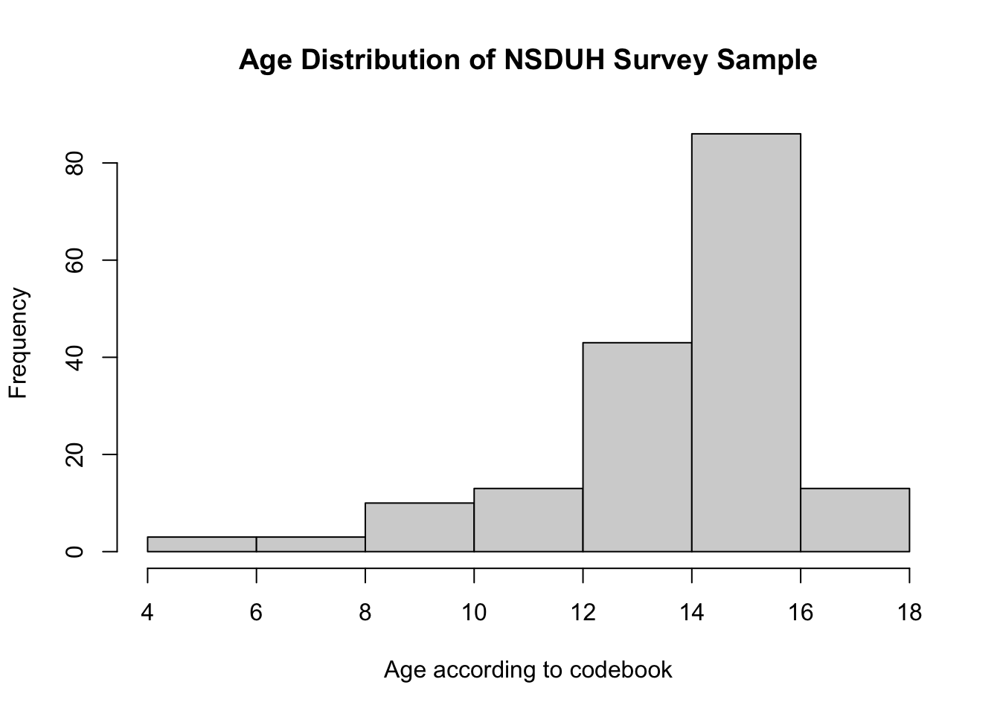 The range of this data is from 12 years old (corresponding to “1” in the dataset) to 65+ years old (“17” in the dataset). The median age of this dataset is between 35 to 49 years old, and the mean is somewhere between 30 to 34 years old. However, since the data is skewed towards the higher values in this dataset, the median gives better insight into the data distribution. Overall, the distribution of this sample shows a continuous increase in frequency of age when going from 12 to 49 years old, but then dramatically decreases after 49 years old.
Do you think this age distribution is representative of the US population? Why or why not? I do not think that this age distribution is representative of the US population. For one, any participant that was under 18 was required to have a parent or guardian present for the survey. This definitely could have skewed the sample population, as it would have required availability of both the parents and young adults. Another factor pointing to why this distribution is not representative of the US population is the fact that the proportion of 35 to 49 year old respondents is more than 10-100x that of 12 year olds. This distribution is not plausible in the real world, as older aged subjects are more at risk for life threatening illnesses than 12 year olds. So, if anything, the proportion of ages would be reversed (but still not as large as the one seen in the data’s distribution)
Is the sample balanced in terms of gender? If not, are there more females or males?
hist(dat$irsex,main="Reported Sex of Respondents", xlab="Sex", ylab="Frequency")mean(dat$irsex)## [1] 1.467836The sample has slightly more male respondents than female respondents. This can be determined by the histogram, which shows a frequency a little over at for males and a frequency of almost 80 for females. We can also tell that the sample has more males than females because the mean is around 1.468 – a value just slightly under the average of 1 + 2 (1.5).
Use this code to draw a stacked bar plot to view the relationship between sex and age. What can you conclude from this plot?
tab.agesex <- table(dat$irsex, dat$age2)
barplot(tab.agesex,
main = "Stacked Barchart of Sex by Age",
xlab = "Age category", ylab = "Frequency",
legend.text = rownames(tab.agesex),
beside = FALSE) # Stacked bars (default) This plot tells us a couple things. First, the highest number of respondents were from the age group of 35 to 49 years old and, of this age range, approximately half of the respondents were male and half were female. Additionally, we can see that almost every age category has roughly equal ratios of male to female respondents. Some notable exceptions to this observation are in the 19 and 20 year old groups, which have more females than males and age groups 12-18, which have more male to female respondents. We also see a higher proportion of male:female respondents in the 30-34 and 65+ age groups. Overall, we can conclude that the age distribution skews to the left, with higher ages having a higher number of respondents and, as stated above, all ages have roughly equal ratios of male:female respondents.
This plot tells us a couple things. First, the highest number of respondents were from the age group of 35 to 49 years old and, of this age range, approximately half of the respondents were male and half were female. Additionally, we can see that almost every age category has roughly equal ratios of male to female respondents. Some notable exceptions to this observation are in the 19 and 20 year old groups, which have more females than males and age groups 12-18, which have more male to female respondents. We also see a higher proportion of male:female respondents in the 30-34 and 65+ age groups. Overall, we can conclude that the age distribution skews to the left, with higher ages having a higher number of respondents and, as stated above, all ages have roughly equal ratios of male:female respondents.
Problem 4: Substance use
For which of the three substances included in the dataset (marijuana, alcohol, and cigarettes) do individuals tend to use the substance earlier?
par(mfrow=c(3,1))
hist(dat$mjage,main="Age When Respondents First Used Marijuana or Hashish", xlab="Age", ylab="Frequency")
hist(dat$iralcage,main="Age When Respondents First Tried Alcohol", xlab="Age", ylab="Frequency")
hist(dat$cigage,main="Age When Respondents Started Smoking Cigarettes Every Dat", xlab="Age", ylab="Frequency")
summary(dat$mjage)## Min. 1st Qu. Median Mean 3rd Qu. Max.
## 7.00 14.00 16.00 15.99 17.50 35.00summary(dat$iralcage)## Min. 1st Qu. Median Mean 3rd Qu. Max.
## 5.00 13.00 15.00 14.95 17.00 23.00summary(dat$cigage)## Min. 1st Qu. Median Mean 3rd Qu. Max.
## 10.00 15.00 17.00 17.65 19.00 50.00Based on the histograms and summaries for all three variables, we are able to determine that individuals tend to use alcohol earlier than cigarettes and marijuana.
Problem 5: Sexual attraction
What does the distribution of sexual attraction look like? Is this what you expected?
library(dplyr)##
## Attaching package: 'dplyr'## The following objects are masked from 'package:stats':
##
## filter, lag## The following objects are masked from 'package:base':
##
## intersect, setdiff, setequal, uniondat$sexatract <- dat$sexatract %>% na_if(., "85")
dat$sexatract <- dat$sexatract %>% na_if(., "94")
dat$sexatract <- dat$sexatract %>% na_if(., "97")
dat$sexatract <- dat$sexatract %>% na_if(., "98")
dat$sexatract <- dat$sexatract %>% na_if(., "99")
hist(dat$sexatract,main="Sexual Attraction of Respondents", xlab="Sexual Orientation According To Codebook", ylab="Frequency") This histogram shows the distribution of sexual attraction if the codes 85,94,97,98, and 99 are removed. The distribution shows that by far the highest proportion of respondents reported their sexual attraction as “I am only attracted to the opposite sex”, or code “1”. There were also respondents who reported either the codes 85,94,97,98 or 99, which excluded them from this question one way or another. Since these responses do not give insight into the sexual orientation of the respondents, these values have been deemed “NA” and therefore do not show in the histogram.
This histogram shows the distribution of sexual attraction if the codes 85,94,97,98, and 99 are removed. The distribution shows that by far the highest proportion of respondents reported their sexual attraction as “I am only attracted to the opposite sex”, or code “1”. There were also respondents who reported either the codes 85,94,97,98 or 99, which excluded them from this question one way or another. Since these responses do not give insight into the sexual orientation of the respondents, these values have been deemed “NA” and therefore do not show in the histogram.
What is the distribution of sexual attraction by gender?
tab.attgen <- table(dat$irsex, dat$sexatract)
barplot(tab.attgen,
main = "Stacked barchart of sexual attraction by gender",
xlab = "Sexual Attraction Category", ylab = "Frequency",
legend.text = rownames(tab.attgen),
beside = FALSE)The sexual attraction category with the highest frequency is “I am only attracted to the opposite sex), or code”1". Of this category, there are overall more males than females. The frequency of respondents corresponding to each sexual attraction category decreases going from 1 to 6. The proportion of females to males is much higher for categories 2 and 3, while the proportion of males to females is higher for categories 5 and 6.
Problem 6: English speaking
What does the distribution of English speaking look like in the sample? Is this what you might expect for a random sample of the US population?
hist(dat$speakengl,main="How Well Participants Speak English", xlab="English Proficiency Category", ylab="Frequency")The distribution of English speaking in the sample shows that almost all participants responded that they speak English “Very well” (coded as “1”). We also see that the lowest English Proficiency rating given (3) corresponded to speaking “Not Well” rather than the lowest possible response, 4, which would have corresponded to “Not at all”. I think that this distribution is what I would expect for this sample, as the surveys were conducted only in English or Spanish, which limits the possible respondent pool, as you cannot give a survey to someone who doesn’t understand the language it is given in. However, I think that a random sample of the US population would probably show a little bit more of a spread, with some people responding “4”, and more people responding “2” or “3” than we see in the sample distribution.
Are there more English speaker females or males?
tab.langgen <- table(dat$irsex, dat$speakengl)
barplot(tab.langgen,
main = "Stacked barchart of English speakers by gender",
xlab = "English Rating Category", ylab = "Frequency",
legend.text = rownames(tab.langgen),
beside = FALSE)There are about an equal proportion of males:females for respondents who reported that they spoke English “Very Well”. However, we see that almost all respondents who reported they spoke English “Well” were male, while pretty much all respondents who reported that they spoke English “Not well” were female. \[\\[2in]\]
Exam 1
Create a folder in your computer (a good place would be under Crim 250, Exams).
Download the dataset from the Canvas website (fatal-police-shootings-data.csv) onto that folder, and save your Exam 1.Rmd file in the same folder.
Download the README.md file. This is the codebook.
Load the data into an R data frame.
dat <- read.csv("fatal-police-shootings-data.csv")Problem 1 (10 points)
- Describe the dataset. This is the source: https://github.com/washingtonpost/data-police-shootings . Write two sentences (max.) about this.
The dataset was collected by the Washington Post and contains records of every fatal police shooting in the US by a police officer since Jan.1 2015. It tracks several details about each victim, including their race, circumstances of the shooting, whether the victim was armed and whether the victim was experiencing a mental health crisis.
- How many observations are there in the data frame?
dim(dat)## [1] 6594 17There are 6594 observations for each of the 17 variables in the data frame. This overall leads to 112,098 observations, not excluding missing data points.
- Look at the names of the variables in the data frame. Describe what “body_camera”, “flee”, and “armed” represent, according to the codebook. Again, only write one sentence (max) per variable.
names(dat)## [1] "id" "name"
## [3] "date" "manner_of_death"
## [5] "armed" "age"
## [7] "gender" "race"
## [9] "city" "state"
## [11] "signs_of_mental_illness" "threat_level"
## [13] "flee" "body_camera"
## [15] "longitude" "latitude"
## [17] "is_geocoding_exact"“body_camera” gives a true or false statement regarding whether or not news reports indicated that the police officer was wearing a body camera and it caught some portion of the incident on film. “flee” tells us how/if the victim was moving away from the officer (by foot, car, or not fleeing). “armed” tells us if the victim was armed with some sort of implement that a police officer believed could cause harm.
- What are three weapons that you are surprised to find in the “armed” variable? Make a table of the values in “armed” to see the options.
table(dat$armed)##
## air conditioner
## 207 1
## air pistol Airsoft pistol
## 1 3
## ax barstool
## 24 1
## baseball bat baseball bat and bottle
## 20 1
## baseball bat and fireplace poker baseball bat and knife
## 1 1
## baton BB gun
## 6 15
## BB gun and vehicle bean-bag gun
## 1 1
## beer bottle binoculars
## 3 1
## blunt object bottle
## 5 1
## bow and arrow box cutter
## 1 13
## brick car, knife and mace
## 2 1
## carjack chain
## 1 3
## chain saw chainsaw
## 2 1
## chair claimed to be armed
## 4 1
## contractor's level cordless drill
## 1 1
## crossbow crowbar
## 9 5
## fireworks flagpole
## 1 1
## flashlight garden tool
## 2 2
## glass shard grenade
## 4 1
## gun gun and car
## 3798 12
## gun and knife gun and machete
## 22 3
## gun and sword gun and vehicle
## 1 17
## guns and explosives hammer
## 3 18
## hand torch hatchet
## 1 14
## hatchet and gun ice pick
## 2 1
## incendiary device knife
## 2 955
## knife and vehicle lawn mower blade
## 1 2
## machete machete and gun
## 51 1
## meat cleaver metal hand tool
## 6 2
## metal object metal pipe
## 5 16
## metal pole metal rake
## 4 1
## metal stick microphone
## 3 1
## motorcycle nail gun
## 1 1
## oar pellet gun
## 1 3
## pen pepper spray
## 1 2
## pick-axe piece of wood
## 4 7
## pipe pitchfork
## 7 2
## pole pole and knife
## 3 2
## railroad spikes rock
## 1 7
## samurai sword scissors
## 4 9
## screwdriver sharp object
## 16 14
## shovel spear
## 7 2
## stapler straight edge razor
## 1 5
## sword Taser
## 23 34
## tire iron toy weapon
## 4 226
## unarmed undetermined
## 421 188
## unknown weapon vehicle
## 82 213
## vehicle and gun vehicle and machete
## 8 1
## walking stick wasp spray
## 1 1
## wrench
## 1Three weapons I was surprised to find were walking stick, air conditioner, and fireworks. Note that missing values were not removed from this table and correspond to the column that is nameless.
Problem 2 (10 points)
- Describe the age distribution of the sample. Is this what you would expect to see?
library(dplyr)
dat$age %>% sort() %>% tail()## [1] 86 86 88 89 91 91hist(dat$age,main="Histogram of Age", xlab="Age", ylab="Frequency")summary(dat$age)## Min. 1st Qu. Median Mean 3rd Qu. Max. NA's
## 6.00 27.00 35.00 37.12 45.00 91.00 308We see that the age distribution skews slightly to the left, with the median age being 35 years old. This distribution is what I would expect to see, as it is more likely for younger, middle-aged people (around 25-40) to be suspected of committing a crime and/or as dangerous than it is for very young children or older adults to be suspected as such. Note that missing values (NA in the dataset) were unable to be excluded from this histogram, which is why there are some values reported as “0” even though the youngest age included in the dataset was 6.
- To understand the center of the age distribution, would you use a mean or a median, and why? Find the one you picked.
summary(dat$age)## Min. 1st Qu. Median Mean 3rd Qu. Max. NA's
## 6.00 27.00 35.00 37.12 45.00 91.00 308Since the data is skewed, it is preferable to use the median to understand the center of age distribution.This is because, for unimodal skewed distributions, the mean is farther in the direction of the pulled out tail than the median is. This tends to occur because the median is considered to have a characteristic of robustness, while the mean does not have this characteristic.
- Describe the gender distribution of the sample. Do you find this surprising?
table(dat$gender)##
## F M
## 3 293 6298counts <- table(dat$gender)
barplot(counts, main="Gender Distribution", xlab="Gender", names=c("Missing","Female", "Male"))
We see that there are way more male (6298) than female (293) victims in this sample. This is not very surprising, as men tend to be perceived as more dangerous than females in precarious situations, which would cause police officers, on average, to feel as if they must fire their weapons more on males than females. Note that values in the “missing” column were missing gender reports in the dataset.
Problem 3 (10 points)
- How many police officers had a body camera, according to news reports? What proportion is this of all the incidents in the data? Are you surprised that it is so high or low?
table(dat$body_camera)##
## False True
## 5684 910Only 910 officers were reported as having a body camera by news reports. This is only 13.8% of all cases reported in this dataset. I am not surprised that it is so low, as there have been many news reports about how police officers failed to have their body cameras on, even if it was mandated by their police force organization.
- In how many of the incidents was the victim fleeing? What proportion is this of the total number of incidents in the data? Is this what you would expect?
counts <- table(dat$flee)
barplot(counts, main="Did the victim flee", xlab="Fleeing type", names=c("Missing","Car", "Foot", "Not fleeing", "Other"))table(dat$flee)##
## Car Foot Not fleeing Other
## 491 1058 845 3952 248The victim was fleeing either by car, foot, or “other”, in 2152 cases. This is only 32.6% of all cases reported. Note, however, that 491 cases did not have information on whether or not the victim was fleeing, and therefore this proportion estimate could be incorrect. I am surprised that the proportion of victims fleeing is not higher, as I would expect officers to use weapons in cases where they were concerned the victim was going to get away.
Problem 4 (10 points) - Answer only one of these (a or b).
- Describe the relationship between the variables “body camera” and “flee” using a stacked barplot. What can you conclude from this relationship?
Hint 1: The categories along the x-axis are the options for “flee”, each bar contains information about whether the police officer had a body camera (vertically), and the height along the y-axis shows the frequency of that category).
Hint 2: Also, if you are unsure about the syntax for barplot, run ?barplot in R and see some examples at the bottom of the documentation. This is usually a good way to look up the syntax of R code. You can also Google it.
tab.camflee <- table(dat$body_camera, dat$flee)
barplot(tab.camflee,
main = "Relationship between body camera flee",
xlab = "Fleeing Type", ylab = "Frequency",
legend.text = rownames(tab.camflee),
beside = FALSE) We can see that in every case, whether the victim was fleeing by car, foot, other, or not fleeing, the proportion of officers NOT wearing a body camera (dark grey) is much higher than the proportion of officers who were wearing a body camera (light grey). This is not surprising, as earlier we found out that only about 14% of cases in this dataset reported that officers were wearing a body camera. Thus, we would expect the proportion of officers wearing body cameras in the context of whether or not the victim was fleeing to be very small across the board. Note that the first column in this stacked bar plot references missing values for how/if the victim fled. Although this data was missing, it still shows the same relationship to body camera proportion as the other columns. Overall, we can conclude that regardless of the fleeing type, the proportion of officers wearing a body camera is very low.
Extra credit (10 points)
- What does this code tell us?
mydates <- as.Date(dat$date)
head(mydates)
(mydates[length(mydates)] - mydates[1])This code first creates a table called “mydates”and tells r to convert character data to dates with the “as.date” command. The second line, “head(mydates)”, tells us the first parts of the data frame, which in this case is the earliest date that data was collected. This earliest date reported is 01/02/2015. Lastly, the last line of code tells use how many days there are between the first and last date reported in the data set. In this case, 2458 days have passed since 01/02/2015 and the last recorded date in the dataset, which is 09/25/2021.
- On Friday, a new report was published that was described as follows by The Guardian: “More than half of US police killings are mislabelled or not reported, study finds.” Without reading this article now (due to limited time), why do you think police killings might be mislabelled or underreported?
Police killings are most likely mislabelled or underreported due to the fact that police forces want to keep this data hush hush. There are several incidents in which police wrongfully used fatal forces to detain a victim and obviously this casts a bad light on the policemen. We can infer that a lot of this data is biased, as it is the police force who is reporting these numbers and because the police force wants to avoid any bad light being shed on it.
- Regarding missing values in problem 4, do you see any? If so, do you think that’s all that’s missing from the data?
Yes, there are 491 missing values in regard to the type of fleeing. Surprisingly, there were no missing values for body camera reports. I think that it is all that is missing from the data for this specific variable (flee). However, there are several other missing data points in regards to other variables like age, gender, etc. \[\\[2in]\]
Assignment 3
**Collaborators: Sara Whitelaw.
Load the data.
library(readr)
library(knitr)
dat.crime <- read_delim("crime_simple.txt", delim = "\t")## Rows: 47 Columns: 14## ── Column specification ────────────────────────────────────────────────────────
## Delimiter: "\t"
## dbl (14): R, Age, S, Ed, Ex0, Ex1, LF, M, N, NW, U1, U2, W, X##
## ℹ Use `spec()` to retrieve the full column specification for this data.
## ℹ Specify the column types or set `show_col_types = FALSE` to quiet this message.This is a dataset from a textbook by Brian S. Everitt about crime in the US in 1960. The data originate from the Uniform Crime Report of the FBI and other government sources. The data for 47 states of the USA are given.
Here is the codebook:
R: Crime rate: # of offenses reported to police per million population
Age: The number of males of age 14-24 per 1000 population
S: Indicator variable for Southern states (0 = No, 1 = Yes)
Ed: Mean of years of schooling x 10 for persons of age 25 or older
Ex0: 1960 per capita expenditure on police by state and local government
Ex1: 1959 per capita expenditure on police by state and local government
LF: Labor force participation rate per 1000 civilian urban males age 14-24
M: The number of males per 1000 females
N: State population size in hundred thousands
NW: The number of non-whites per 1000 population
U1: Unemployment rate of urban males per 1000 of age 14-24
U2: Unemployment rate of urban males per 1000 of age 35-39
W: Median value of transferable goods and assets or family income in tens of $
X: The number of families per 1000 earning below 1/2 the median income
We are interested in checking whether the reported crime rate (# of offenses reported to police per million population) and the average education (mean number of years of schooling for persons of age 25 or older) are related.
- How many observations are there in the dataset? To what does each observation correspond?
dim(dat.crime)## [1] 47 14There are 14 columns and 47 rows of data, leading to the overall value of 658 observations. Each observation corresponds to a specific variable listed above by the codebook (i.e. number of males 14-24 per 1000 people, number of males per 1000 females, etc) for each of 47 states reported on in this study.
- Draw a scatterplot of the two variables. Calculate the correlation between the two variables. Can you come up with an explanation for this relationship?
plot(dat.crime$Ed,dat.crime$R, main="Scatterplot comparing reported crime rate and average education", xlab="Mean of years of schooling x 10 for persons of age 25 or older", ylab="Number of offenses reported to police per million population")cor(dat.crime$Ed,dat.crime$R)## [1] 0.3228349There shows to be a moderate positive correlation between the number of offenses reported to police per million population and the mean of years of schooling x10 for persons age 25 or older. A possible explanation for this relationship is that maybe the cost of education led to more people experiencing debt, which could cause them to commit crimes to obtain money to pay off the debt. However, this is, of course, completely speculative.
- Regress reported crime rate (y) on average education (x) and call this linear model
crime.lmand write the summary of the regression.
crime.lm <- lm(formula = dat.crime$R ~ dat.crime$Ed, data = dat.crime)
summary(crime.lm)##
## Call:
## lm(formula = dat.crime$R ~ dat.crime$Ed, data = dat.crime)
##
## Residuals:
## Min 1Q Median 3Q Max
## -60.061 -27.125 -4.654 17.133 91.646
##
## Coefficients:
## Estimate Std. Error t value Pr(>|t|)
## (Intercept) -27.3967 51.8104 -0.529 0.5996
## dat.crime$Ed 1.1161 0.4878 2.288 0.0269 *
## ---
## Signif. codes: 0 '***' 0.001 '**' 0.01 '*' 0.05 '.' 0.1 ' ' 1
##
## Residual standard error: 37.01 on 45 degrees of freedom
## Multiple R-squared: 0.1042, Adjusted R-squared: 0.08432
## F-statistic: 5.236 on 1 and 45 DF, p-value: 0.02688- Are the four assumptions of linear regression satisfied? To answer this, draw the relevant plots. (Write a maximum of one sentence per assumption.)
plot(dat.crime$Ed, crime.lm$residuals, ylim=c(-25,25), main="Residuals vs. x", xlab="x, Mean Years of schooling x10 for persons of age 25 or older", ylab="Residuals")
abline(h = 0, lty="dashed")plot(crime.lm, which=1)
plot(crime.lm, which=3)
plot(crime.lm, which=5)plot(crime.lm, which=2)Since we do not see a clear pattern or clumping in the residuals vs x plot, I believe it is safe to assume that that independence assumption is met for this data set.The line showing the average value of the residuals at each value of fitted value is pretty flat, which means there is no discernible non-linear trend to the residuals; we can therefore assume linearity. We see almost a flat line in the scale-location plot, meaning that the errors in the data have constant variance; the homoscedasticity assumption is met. The leverage plot tells us that no outlier significantly influences the model fit, as no outlier is outside of Cook’s distance; also, our q-q plot tells us that our residuals are roughly normally distributed towards the middle of the dataset, but the right and left tails of our distribution are a little “light” for what a normal distribution would show. Overall, I would say that the normal population assumption is reasonably met, with some small concerns (like the light tails).
- Is the relationship between reported crime and average education statistically significant? Report the estimated coefficient of the slope, the standard error, and the p-value. What does it mean for the relationship to be statistically significant?
The coefficient of the slope is equal to 1.1161, the standard error is 0.49, and the p-value is 0.03. Since the p-value is less than 0.05, we can conclude that our data is statistically significant. This means that there is a relationship between mean years of education and the reported crime rate that is not due only to chance.
- How are reported crime and average education related? In other words, for every unit increase in average education, how does reported crime rate change (per million) per state?
The slope term in our model suggests that for every unit increase in average education, the reported crime rate increases by 1.1161 cases per million per state.
- Can you conclude that if individuals were to receive more education, then crime will be reported more often? Why or why not?
No, we cannot conclude this. Our date only shows correlation, not causation. Since this was not a true, controlled experiment, there is the possibility for reverse causation or for a third variable confound. Thus, we can only say that there is a positive correlation between to 2 variables of interest. \[\\[2in]\]
Exam 2
Data description: This dataset provides (simulated) data about 200 police departments in one year. It contains information about the funding received by the department as well as incidents of police brutality. Suppose this dataset (sim.data.csv) was collected by researchers to answer this question: “Does having more funding in a police department lead to fewer incidents of police brutality?”
Codebook: - funds: How much funding the police department received in that year in millions of dollars. - po.brut: How many incidents of police brutality were reported by the department that year. - po.dept.code: Police department code
Problem 1: EDA (10 points)
Describe the dataset and variables. Perform exploratory data analysis for the two variables of interest: funds and po.brut.
dat <- read.csv(file = 'sim.data.csv')
dim(dat)## [1] 200 3summary(dat$funds)## Min. 1st Qu. Median Mean 3rd Qu. Max.
## 21.40 51.67 59.75 61.04 72.17 99.70summary(dat$po.brut)## Min. 1st Qu. Median Mean 3rd Qu. Max.
## 0.00 14.00 19.00 18.14 22.00 29.00hist(dat$funds,main="Histogram of Police Funds", xlab="Funding in millions for that year", ylab="Frequency")hist(dat$po.brut,main="Histogram of Police Brutality", xlab="Incidents of police brutality reported that year", ylab="Frequency")plot(dat$funds,dat$po.brut, main="Scatterplot comparing funding in millions vs incidents of police brutality")This data set has a total of 600 observations: 200 observations per each of the 3 variables. The three variables present in this data set are funds (how much funding the police dept. received that year in millions of dollars), po.brut (how many incidents of police brutality were reported by the department that year), and po.dept.code (the police department code). The histogram of the funds variable shows a relatively normal distribution with a mean of 61.04 millions of dollars received in funding for that year. The distribution of police brutality is mildly skewed to the right, thus I focused on the median rather than the mean to understand the spread of the data better. The median showed to be 19 incidents of police brutality reported for that year. Looking at the scatter plot of the data, we can see that, on average, it appears as when funding of police departments increases, the number of police brutality incidents decreases.
Problem 2: Linear regression (30 points)
- Perform a simple linear regression to answer the question of interest. To do this, name your linear model “reg.output” and write the summary of the regression by using “summary(reg.output)”.
# Remember to remove eval=FALSE!!
reg.output <- lm(dat$po.brut ~ dat$funds, data = dat)
summary(reg.output)##
## Call:
## lm(formula = dat$po.brut ~ dat$funds, data = dat)
##
## Residuals:
## Min 1Q Median 3Q Max
## -3.9433 -0.2233 0.2544 0.5952 1.1803
##
## Coefficients:
## Estimate Std. Error t value Pr(>|t|)
## (Intercept) 40.543069 0.282503 143.51 <2e-16 ***
## dat$funds -0.367099 0.004496 -81.64 <2e-16 ***
## ---
## Signif. codes: 0 '***' 0.001 '**' 0.01 '*' 0.05 '.' 0.1 ' ' 1
##
## Residual standard error: 0.9464 on 198 degrees of freedom
## Multiple R-squared: 0.9712, Adjusted R-squared: 0.971
## F-statistic: 6666 on 1 and 198 DF, p-value: < 2.2e-16The linear regression above shows that there is a slope of -0.3671. In other words, it tells us that, on average, as funding of police departments increases by 1 unit in millions, the number of police brutality incidents reported decreases by about 0.3671 incidents. The standard error tells us that the number of police brutality incidents predicted by the equation of this linear regression line can vary by 0.004496 incidents. Additionally, we see that the p-value for this data set is 2^-16, which indicates that the relationship between these two variables is strong and statistically significant. The residual standard error reported is 0.9464, which means that the average amount that the response (police brutality) will deviate from the true regression line is about 0.9464 incidents, on average. R squared tells us that roughly 97% of the variance found in the response variable (police brut) can be explained by the predictor variable (funding).
- Report the estimated coefficient, standard error, and p-value of the slope. Is the relationship between funds and incidents statistically significant? Explain.
__See above answer for the reporting of all these values (sorry about the confusion). We know that the relationship between funds and incidents is statistically significant because the p-value is much smaller than 0.05, which is the cut off for statistical significance that most statisticians use. We also can tell that the relationship is statistically significant because the regression summary tells us that the significance is three stars (***).__
- Draw a scatterplot of po.brut (y-axis) and funds (x-axis). Right below your plot command, use abline to draw the fitted regression line, like this:
# Remember to remove eval=FALSE!!
plot(dat$funds,dat$po.brut, main="Scatterplot comparing funding in millions vs incidents of police brutality")
abline(reg.output, col = "red", lwd=2)plot(dat$funds, reg.output$residuals, ylim=c(-25,25), main="Residuals vs. x", xlab="x, Funding the police department received that year in millions", ylab="Residuals")
abline(h = 0, lty="dashed")plot(reg.output, which=1)
plot(reg.output, which=3)
plot(reg.output, which=5)plot(reg.output, which=2) Does the line look like a good fit? Why or why not?
Does the line look like a good fit? Why or why not?
The line looks like a pretty good fit for the data. It appears as a good fit because most of the data points on the graph fall on this line, and those that do not fall on the line don’t seem to deviate wildly from it. However, it is important to note that it looks like the regression line is better for predicting the middle values rather than values on either of the tail ends.
- Are the four assumptions of linear regression satisfied? To answer this, draw the relevant plots. (Write a maximum of one sentence per assumption.) If not, what might you try to do to improve this (if you had more time)?
When plotting the residuals vs x plot, we see a pretty clear U-shaped pattern. Unfortunately, this indicates that there may be a failure of independence between the errors in the true underlying regression model; thus, the independence assumption is not satisfied for this data set. Looking at the Residuals vs Fitted plot, we see that the red line is pretty curved, not flat. This tells us that there is a discernible non-linear trend to the residuals and therefore the linearity assumption is not satisfied. As for the scale location plot, we again see a pretty strong curve, rather than a flat line; this tells us that the residuals have non-constant variance and therefore the homoscedasticity assumption is not satisfied. The leverage plot tells us that no outlier significantly influences the model fit, as no outlier is outside of Cook’s distance; however, the q-q plot tells us that the residuals skew pretty extremely to the left. Thus, the normal population assumption is not met for this linear regression.
- Answer the question of interest based on your analysis.
Based on the above linear regression analysis, we cannot confidently say that there is linear relationship between police department funding and police brutality incidents. In other words, it cannot be said that changes in police department funding directly correlates to the number of police brutality incidents.
Problem 3: Data ethics (10 points)
Describe the dataset. Considering our lecture on data ethics, what concerns do you have about the dataset? Once you perform your analysis to answer the question of interest using this dataset, what concerns might you have about the results?
Although the dataset above was collected by researchers, it still relies on police departments to report accurate and truthful numbers of incidents of police brutality. Relying on the police departments to do this is risky, as the true number of incidents is probably higher than what is reported. This could be due to the fact that police do not want their department to look bad, or because policemen have different interpretations of what qualifies as police brutality. It also could be due to the fact that it is favorable for police to report less incidents when they have higher funding, as it may persuade the public or government to allocate more monetary resources to police departments to avoid brutality incidents. This is a clear conflict of interests. Additionally, as covered in our data ethics lecture, decades of research has shown that police databases are not a complete census of all criminal offences, nor do they constitute a representative random sample. Thus, I have concerns that the dataset is biased, either explicitly or implicitly. My concerns regarding the results are that at a first glance, it seems like there is a strong correlation between funding and brutality incidents and this relationship is one that media may jump to report on. However, once we do proper analysis of the data, we see that using a linear model to predict this relationship is actually quite problematic. Thus, people who do not do proper analysis may incorrectly conclude that there is a definite negative linear relationship between police department funding and police brutality. \[\\[2in]\]
Assignment 4 Part 1
Intro
#install.packages("tidyverse")
library(tidyverse)## ── Attaching packages ─────────────────────────────────────── tidyverse 1.3.1 ──## ✓ tibble 3.1.4 ✓ stringr 1.4.0
## ✓ tidyr 1.1.4 ✓ forcats 0.5.1
## ✓ purrr 0.3.4## ── Conflicts ────────────────────────────────────────── tidyverse_conflicts() ──
## x dplyr::filter() masks stats::filter()
## x dplyr::lag() masks stats::lag()
## x purrr::map() masks maps::map()#> ── Attaching packages ─────────────────────────────────────── tidyverse 1.3.0 ──
#> ✔ ggplot2 3.3.2 ✔ purrr 0.3.4
#> ✔ tibble 3.0.3 ✔ dplyr 1.0.2
#> ✔ tidyr 1.1.2 ✔ stringr 1.4.0
#> ✔ readr 1.4.0 ✔ forcats 0.5.0
#> ── Conflicts ────────────────────────────────────────── tidyverse_conflicts() ──
#> ✖ dplyr::filter() masks stats::filter()
#> ✖ dplyr::lag() masks stats::lag()This chunk installed the tidyverse package and loaded the core tidyverse through the library function. All of the hashtags tell us which functions from tidyverse conflict with functions in base R.
First Steps
mpg## # A tibble: 234 × 11
## manufacturer model displ year cyl trans drv cty hwy fl class
## <chr> <chr> <dbl> <int> <int> <chr> <chr> <int> <int> <chr> <chr>
## 1 audi a4 1.8 1999 4 auto… f 18 29 p comp…
## 2 audi a4 1.8 1999 4 manu… f 21 29 p comp…
## 3 audi a4 2 2008 4 manu… f 20 31 p comp…
## 4 audi a4 2 2008 4 auto… f 21 30 p comp…
## 5 audi a4 2.8 1999 6 auto… f 16 26 p comp…
## 6 audi a4 2.8 1999 6 manu… f 18 26 p comp…
## 7 audi a4 3.1 2008 6 auto… f 18 27 p comp…
## 8 audi a4 quattro 1.8 1999 4 manu… 4 18 26 p comp…
## 9 audi a4 quattro 1.8 1999 4 auto… 4 16 25 p comp…
## 10 audi a4 quattro 2 2008 4 manu… 4 20 28 p comp…
## # … with 224 more rows#> # A tibble: 234 x 11
#> manufacturer model displ year cyl trans drv cty hwy fl class
#> <chr> <chr> <dbl> <int> <int> <chr> <chr> <int> <int> <chr> <chr>
#> 1 audi a4 1.8 1999 4 auto(l5) f 18 29 p compa…
#> 2 audi a4 1.8 1999 4 manual(m5) f 21 29 p compa…
#> 3 audi a4 2 2008 4 manual(m6) f 20 31 p compa…
#> 4 audi a4 2 2008 4 auto(av) f 21 30 p compa…
#> 5 audi a4 2.8 1999 6 auto(l5) f 16 26 p compa…
#> 6 audi a4 2.8 1999 6 manual(m5) f 18 26 p compa…
#> # … with 228 more rowsThis loaded a data frame that contains observations collected by the US EPA on 38 models of cars. Two of the variables are “displ” which is a car’s engine size, in litres, and “hwy” which is a car’s efficiency on the highway, in mpg.
ggplot(data = mpg) +
geom_point(mapping = aes(x = displ, y = hwy))
This graph shows the relationship between engine size and fuel efficiency. It is a negative relationship. The ggplot() function creates a coordinate system that you can add laters to. The first line in this chunk is the dataset used in the graph. You complete the graph by adding one or more layers with the command geom_point(), which creates a scatter plot. Each geom function takes a mapping argument, which is paired with “aes()” and the x and y arguments of aes().
?mpg
ggplot(data = mpg) +
geom_point(mapping = aes(x = hwy, y = cyl))
Nothing showed up on the graph when I just run ggplot(data = mpg). Using the ?mpg command, I found out that there are 234 rows and 11 columns. Drv is the type of drive train. The next line shows a scatterplot of hwy vs cyl (number of cylinders).
ggplot(data = mpg) +
geom_point(mapping = aes(x = class, y = drv))The scatter plot for this is not useful because both variables are qualitative measures.
Aesthetic Mappings
ggplot(data = mpg) +
geom_point(mapping = aes(x = displ, y = hwy, color = class))
Colors allowed us to visualize the different categories within the “class” variable. You could also use size as the aesthetic, but isn’t as clear of a graph. Alpha is a gray-scale gradient, shape assigns different shapes. You can also just change the color of all of the dots by specifying a color such as “blue” in place of “class” in the above command.
ggplot(data = mpg) +
geom_point(mapping = aes(x = displ, y = hwy, color = "blue"))
Here, the parenthesis is not in the correct place. To color the whole graph blue, there should be a parenthesis after hwy to close the aes argument, then you can specify the color.
Categorical variables include manufacturer, model, trans, drv, fl, and class. Continuous variables are displ, year, cyl, cty and hwy.
ggplot(data = mpg) +
geom_point(mapping = aes(x = displ, y = hwy, color = trans))ggplot(data = mpg) +
geom_point(mapping = aes(x = displ, y = hwy, color = displ < 5))
Categorical variables use discrete colors for each category within the variable. Continuous variables use a color gradient to indicate increases/decreases in number. If you map multiple aesthetics to the same variable, that variable will include both aesthetics (i.e both size and color would change for different values). It seems as if stroke changes the size of the shapes in reference to a continuous variable. If you map the aesthetic as shown above, it will color the dots according to whether their values are greater or less than 5.
Make sure when plotting ggplot, the plus sign is at the end of the first line, not the beginning of the second line.
Facets
ggplot(data = mpg) +
geom_point(mapping = aes(x = displ, y = hwy)) +
facet_wrap(~ class, nrow = 2)
Facets = subplots that each display one subset of the data. Variable you want to facet is placed after ~.
ggplot(data = mpg) +
geom_point(mapping = aes(x = displ, y = hwy)) +
facet_grid(drv ~ cyl) Facet_grid facets your plot on the combo of 2 variables. If you don’t want to facet in the rows or columns dimension, use a period instead of a variable name.
Facet_grid facets your plot on the combo of 2 variables. If you don’t want to facet in the rows or columns dimension, use a period instead of a variable name.
ggplot(data = mpg) +
geom_point(mapping = aes(x = displ, y = hwy)) +
facet_wrap(~ hwy, nrow = 2)If you facet a continuous variable, it converts it into a categorical variable and contains a facet for each different value.
ggplot(data = mpg) +
geom_point(mapping = aes(x = drv, y = cyl))
Empty cells in the facet_grid(drv~cyl) are combinations of drv and cyl that do not have observations. These empty cells correspond to the scatterplot above because the empty cells match where the scatterplot does not have points.
ggplot(data = mpg) +
geom_point(mapping = aes(x = displ, y = hwy)) +
facet_grid(drv ~ .)
ggplot(data = mpg) +
geom_point(mapping = aes(x = displ, y = hwy)) +
facet_grid(. ~ cyl)
?facet_wrapThe period replaces a variable for the dimension when faceted. In other words, for (drv~.), facets by values of drv on the y-axis. The (.~cyl) facets by values of cyl on the x axis. An advantage of faceting is that it creates categories that are more easily visualized (sometimes colors can look very similar). A disadvantage of faceting is that it is harder to compare values that are between categories, since the observations for each category are on different plots. For a large dataset, it would be better to use faceting because there will be more colors that look similar to each other as there are more and more categories (i.e. different shades of blue may be hard to distinguish). nrow and ncol define the number of rows and columns for facet_wrap. You can also use thinks such as srhink, labeller, or switch (+more) to control the layout of individual panels. facet_grid does not have nrow/ncol arguments because the number of unique values of the variables defines the number of rows and columns so you do not have to. When using facet_grid, you should put the variable with more unique levels in the columns because there will be more space for columns is the plot is laid out horizontally.
##Geometric Objects
You can put linetype = variable within the geom_smooth argument and that will draw a different line, with a different linetype, for each unique value of the variable that you map to linetype.
ggplot(data = mpg) +
geom_smooth(mapping = aes(x = displ, y = hwy))## `geom_smooth()` using method = 'loess' and formula 'y ~ x'
ggplot(data = mpg) +
geom_smooth(mapping = aes(x = displ, y = hwy, group = drv))## `geom_smooth()` using method = 'loess' and formula 'y ~ x'
ggplot(data = mpg) +
geom_smooth(mapping = aes(x = displ, y = hwy, color = drv), show.legend = FALSE )## `geom_smooth()` using method = 'loess' and formula 'y ~ x'
ggplot2 will group the data for these geoms whenever you map an aesthetic to a discrete variable.
ggplot(data = mpg) +
geom_point(mapping = aes(x = displ, y = hwy)) +
geom_smooth(mapping = aes(x = displ, y = hwy))## `geom_smooth()` using method = 'loess' and formula 'y ~ x'
This is a bit repetitive. Instead, use below plot to create the same graph:
ggplot(data = mpg, mapping = aes(x = displ, y = hwy)) +
geom_point() +
geom_smooth()## `geom_smooth()` using method = 'loess' and formula 'y ~ x'
This treats the mappings as local mappings for the layer only. You can display different aesthetics in different layers, like below:
ggplot(data = mpg, mapping = aes(x = displ, y = hwy)) +
geom_point(mapping = aes(color = class)) +
geom_smooth()## `geom_smooth()` using method = 'loess' and formula 'y ~ x'
If you want to specify different data for each layer, change the local argument in geom_smooth like this:
ggplot(data = mpg, mapping = aes(x = displ, y = hwy)) +
geom_point(mapping = aes(color = class)) +
geom_smooth(data = filter(mpg, class == "subcompact"), se = FALSE)## `geom_smooth()` using method = 'loess' and formula 'y ~ x'
line chart: geom_line(). boxplot: geom_boxplot(). histogram: geom_histogram(). area chart: geom_area(). The chunk below will make a scatter plot with displ on the x axis, hwy on y axis, and will color the points according to drv.There will be a smooth line without standard errors (se) fit through each drv group.
ggplot(data = mpg, mapping = aes(x = displ, y = hwy, colour = drv)) +
geom_point() +
geom_smooth(se = FALSE)## `geom_smooth()` using method = 'loess' and formula 'y ~ x'
#> `geom_smooth()` using method = 'loess' and formula 'y ~ x'If you made the argument show.legend = TRUE, it would add a legend to the specified plot. It most likely wasn’t included above because we were just looking at how you group data according to different aesthetics, so it wasn’t really necessary for us to have the legend for information. The se argument would add standard error bands to the lines.
ggplot(data = mpg, mapping = aes(x = displ, y = hwy)) +
geom_point() +
geom_smooth()## `geom_smooth()` using method = 'loess' and formula 'y ~ x'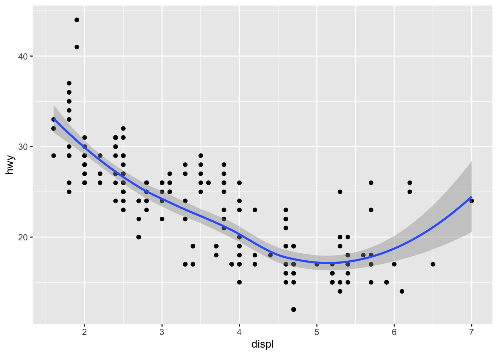
ggplot() +
geom_point(data = mpg, mapping = aes(x = displ, y = hwy)) +
geom_smooth(data = mpg, mapping = aes(x = displ, y = hwy))## `geom_smooth()` using method = 'loess' and formula 'y ~ x'
These graphs look the same because putting the specifics in the ggplot argument allows those same specifics to be localized to the below arguments. The second code chunk is the exact same code, just with repetitive coding within the brackets.
ggplot(mpg, aes(x = displ, y = hwy)) +
geom_point() +
geom_smooth(se = FALSE)## `geom_smooth()` using method = 'loess' and formula 'y ~ x'
ggplot(mpg, aes(x = displ, y = hwy)) +
geom_smooth(mapping = aes(group = drv), se = FALSE) +
geom_point()## `geom_smooth()` using method = 'loess' and formula 'y ~ x'
ggplot(mpg, aes(x = displ, y = hwy, colour = drv)) +
geom_point() +
geom_smooth(se = FALSE)## `geom_smooth()` using method = 'loess' and formula 'y ~ x'
ggplot(mpg, aes(x = displ, y = hwy)) +
geom_point(aes(colour = drv)) +
geom_smooth(se = FALSE)## `geom_smooth()` using method = 'loess' and formula 'y ~ x'
ggplot(mpg, aes(x = displ, y = hwy)) +
geom_point(aes(colour = drv)) +
geom_smooth(aes(linetype = drv), se = FALSE)## `geom_smooth()` using method = 'loess' and formula 'y ~ x'
ggplot(mpg, aes(x = displ, y = hwy)) +
geom_point(size = 4, color = "white") +
geom_point(aes(colour = drv))
Statistical Transformations
ggplot(data = diamonds) +
geom_bar(mapping = aes(x = cut))
?geom_bar
ggplot(data = diamonds) +
stat_count(mapping = aes(x = cut))
Shows total number of diamonds in the diamonds dataset, grouped by cut. Bar charts, histograms, and frequency polygons bin data and then plot bind counts. Smoothers fit a model to your data and then plot predictions from the model. Boxplots compute a robust summary of the distribution. Default value for stat is “count”, so geom_bar uses stat_count(). Thus these are interchangeable.
demo <- tribble(
~cut, ~freq,
"Fair", 1610,
"Good", 4906,
"Very Good", 12082,
"Premium", 13791,
"Ideal", 21551
)
ggplot(data = demo) +
geom_bar(mapping = aes(x = cut, y = freq), stat = "identity")
This overrides the default stat.
ggplot(data = diamonds) +
geom_bar(mapping = aes(x = cut, y = stat(prop), group = 1))
?geom_bar()This overrides the default mapping from transformed variables to aesthetics. We now see proportion instead of count.
ggplot(data = diamonds) +
stat_summary(
mapping = aes(x = cut, y = depth),
fun.min = min,
fun.max = max,
fun = median
)
?stat_summary()
ggplot(data = diamonds) +
geom_pointrange(
mapping = aes(x = cut, y = depth),
stat = "summary",
fun.min = min,
fun.max = max,
fun = median )
?stat_smooth()Stat_summary summarizes the y values for each unique x value. The default geom associated with stat_summary is geom_pointrange. You can rewrite the previous plot to use the geom function by using the last line of code in the above chunk. geom_col has a different default stat than geom_bar(). You have to define x and y values for the geom_bar. Most geoms and stats that are used in concert tend to have their names in common. stat_smooth computes y, ymin, ymax, and se. The parameters that control the behavior are method, formula, method.arg, se, na.rm.
ggplot(data = diamonds) +
geom_bar(mapping = aes(x = cut, y = after_stat(prop)))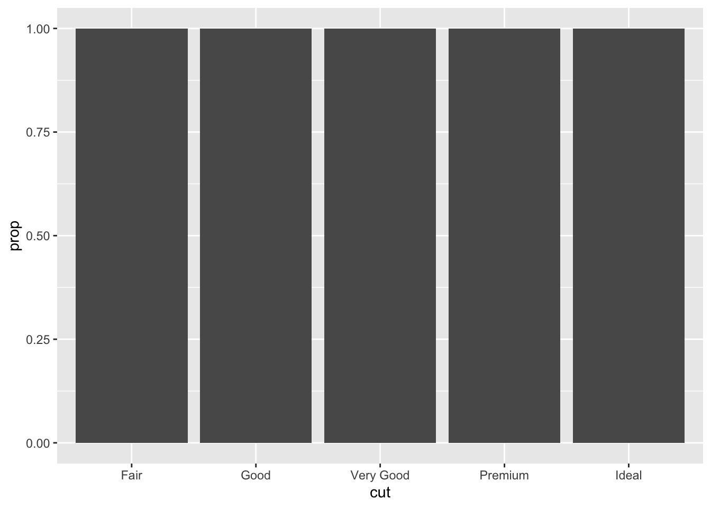
ggplot(data = diamonds) +
geom_bar(mapping = aes(x = cut, fill = color, y = after_stat(prop)))
If group = 1 is not included, all the bars will have the same height of 1 because geom_bar assumes that the groups are equal to the x values. There is a problem with the 2 plots because the proportions are calculated within the groups. Also, if we use the fill aesthetic, the heights of the bars need to be normalized.
Position Adjustments
You can color bar charts using either color aesthetic or fill. If you fill the aesthetic to another variable, the bars will automatically stack. Stacking is performed automatically by the position adjustment.
ggplot(data = diamonds) +
geom_bar(mapping = aes(x = cut, colour = cut))
ggplot(data = diamonds) +
geom_bar(mapping = aes(x = cut, fill = cut))
ggplot(data = diamonds) +
geom_bar(mapping = aes(x = cut, fill = clarity))
If you put position=identity, it will place each object where it falls in the context of the graph. It will cause overlapping so you need to make the bars transparent. If position=fill, works like stacking, but makes each set of stacked bars the same height. postion=dodge places overlapping objects beside one another. For scatter plots use position = jitter to add small amount of random nooise to each point – makes the graph less accurate at smalle scales, but more revealing at large scales.
ggplot(data = diamonds, mapping = aes(x = cut, fill = clarity)) +
geom_bar(alpha = 1/5, position = "identity")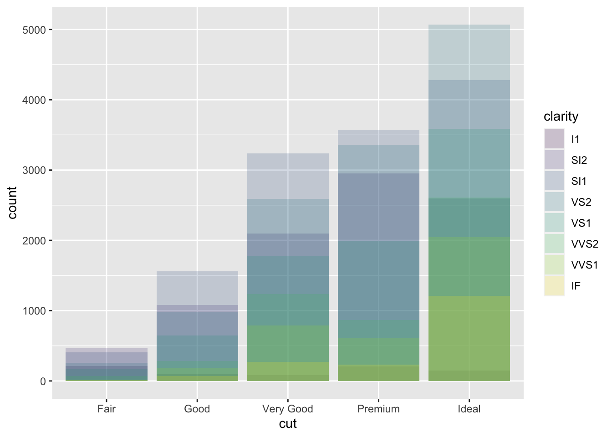
ggplot(data = diamonds, mapping = aes(x = cut, colour = clarity)) +
geom_bar(fill = NA, position = "identity")
ggplot(data = diamonds) +
geom_bar(mapping = aes(x = cut, fill = clarity), position = "fill")
ggplot(data = diamonds) +
geom_bar(mapping = aes(x = cut, fill = clarity), position = "dodge")
ggplot(data = mpg) +
geom_point(mapping = aes(x = displ, y = hwy), position = "jitter")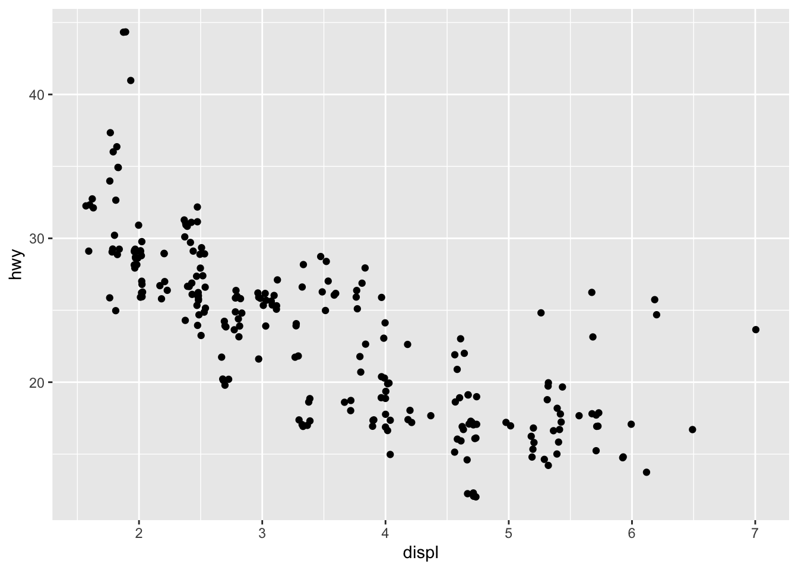
The plot below looks like it has a lot of overplotting. You could use the jitter function to improve it.
ggplot(data = mpg, mapping = aes(x = cty, y = hwy)) +
geom_point()
Width and height control the amount of jitter. geom_count doesn’t add any random noise like geom_jitter does, but instead sizes the points relative to the number of observations. Both have some overplotting. The default position adjustment is dodge2. It moves the geom horizontally to avoid overlapping other geoms.
ggplot(data = mpg, aes(x = drv, y = hwy, colour = class)) +
geom_boxplot()Coordinate Systems
coord_flip switches the x and y axes. coord_quickmap sets the aspect ratio correctly for maps. coord_polar uses polar coordinates.
ggplot(data = mpg, mapping = aes(x = class, y = hwy)) +
geom_boxplot()
ggplot(data = mpg, mapping = aes(x = class, y = hwy)) +
geom_boxplot() +
coord_flip()
nz <- map_data("nz")
ggplot(nz, aes(long, lat, group = group)) +
geom_polygon(fill = "white", colour = "black")
ggplot(nz, aes(long, lat, group = group)) +
geom_polygon(fill = "white", colour = "black") +
coord_quickmap()
bar <- ggplot(data = diamonds) +
geom_bar(
mapping = aes(x = cut, fill = cut),
show.legend = FALSE,
width = 1
) +
theme(aspect.ratio = 1) +
labs(x = NULL, y = NULL)
bar + coord_flip()
bar + coord_polar()
To turn a stacked bar plot into a pie chart, use coord_polar(theta=“y”). The theta = y maps y to the angle of each section.
ggplot(mpg, aes(x = factor(1), fill = drv)) +
geom_bar(width = 1) +
coord_polar(theta = "y")labs function adds axis titles, plot titles, and a caption to the plot. coord_quickmap uses an approximate but faster map projection than coord_map. This approximation ignores the curvature of the Earth. For coord_quickmap, individual geoms don’t need to be transformed. The plot below shows that there is a positive correlation between cty and hwy. The function coord_fixed makes the line produced by geom_abline be at a 45-degree angle. A 45 degree line allows for us to compare the hwy and cty to the case in where they were equal.
p <- ggplot(data = mpg, mapping = aes(x = cty, y = hwy)) +
geom_point() +
geom_abline()
p + coord_fixed()
Layered grammar of graphics
See below for a code template:
#ggplot(data = <DATA>) +
#<GEOM_FUNCTION>(
#mapping = aes(<MAPPINGS>),
#stat = <STAT>,
#position = <POSITION>
#) +
#<COORDINATE_FUNCTION> +
#<FACET_FUNCTION>\[\\[2in]\]
Assignment 4 Part 2
Intro
#install.packages("ggrepel")
#install.packages("viridis")
library(tidyverse)Label
Add labels with the labs() function. You can add title, subtitle or a caption.
ggplot(mpg, aes(displ, hwy)) +
geom_point(aes(color = class)) +
geom_smooth(se = FALSE) +
labs(title = "Fuel efficiency generally decreases with engine size",
subtitle = "Two seaters (sports cars) are an exception because of their light weight",
caption = "Data from fueleconomy.gov" )## `geom_smooth()` using method = 'loess' and formula 'y ~ x'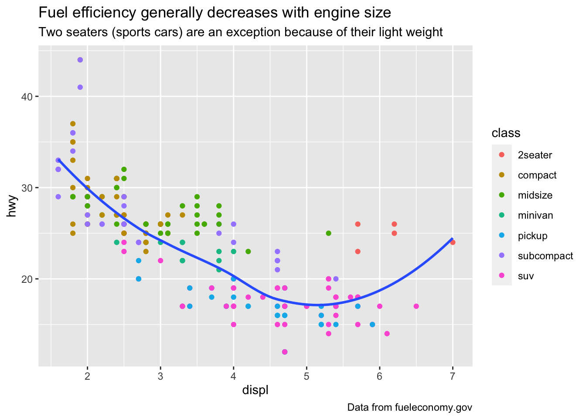
You can also use mathematical equations instead of text strings. Use quote() instead of "".
?plotmath
df <- tibble(
x = runif(10),
y = runif(10)
)
ggplot(df, aes(x, y)) +
geom_point() +
labs(
x = quote(sum(x[i] ^ 2, i == 1, n)),
y = quote(alpha + beta + frac(delta, theta))
)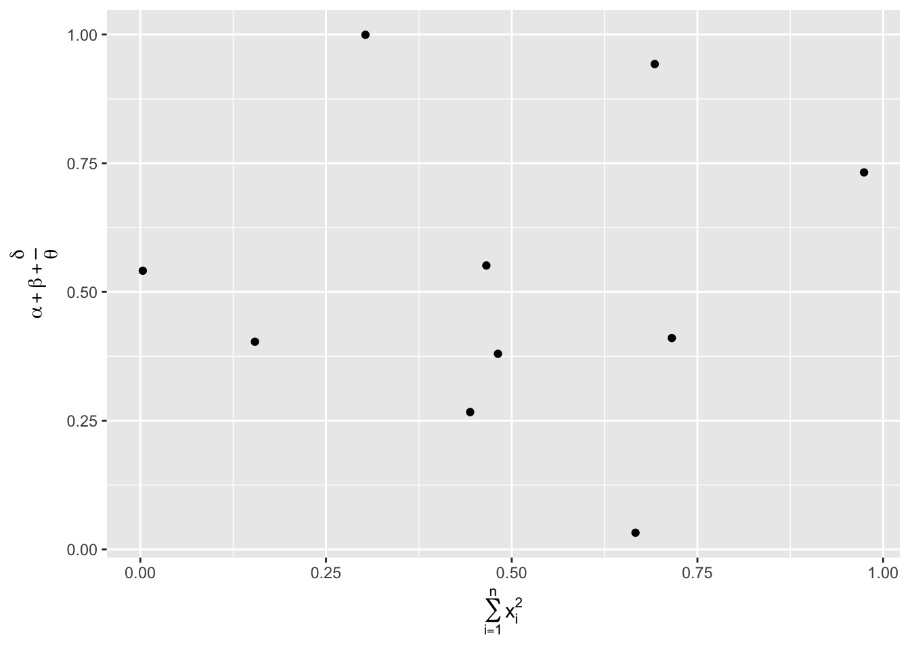
Exercises
ggplot(
data = mpg,
mapping = aes(x = cty, y = hwy)) +
geom_point(aes(color = class)) +
geom_smooth(se = FALSE) +
labs(
title = "Highway mpg generally increases with increases in city mpg",
subtitle = "Comparing the city mpg to highway mpg",
caption = "Data from fueleconomy.gov",
x = "Number of Cylinders",
y = "Highway Miles per Gallon" )## `geom_smooth()` using method = 'loess' and formula 'y ~ x'Better Model:
ggplot(mpg, aes(displ, hwy, colour = class)) +
geom_point() +
geom_smooth(method = "lm", se = FALSE) +
labs(
title = "Fuel Efficiency Mostly Varies by Car Class",
subtitle = "Subcompact caries fuel efficiency varies by engine size",
caption = "Data from fueleconomy.gov",
y = "Highway Miles per Gallon",
x = "Engine Displacement"
)## `geom_smooth()` using formula 'y ~ x'Annotations
You can label individual observations with geom_text. First code pulls out the most efficient car in each class and labels it on the plot. You can switch to geom_label to draw a rectangle behind the text. Also use nudge_y to move the labels slightly above corresponding points. Uset eh ggrepel package to adjust labels so they do not overlap.
best_in_class <- mpg %>%
group_by(class) %>%
filter(row_number(desc(hwy)) == 1)
ggplot(mpg, aes(displ, hwy)) +
geom_point(aes(colour = class)) +
geom_text(aes(label = model), data = best_in_class)
ggplot(mpg, aes(displ, hwy)) +
geom_point(aes(colour = class)) +
geom_label(aes(label = model), data = best_in_class, nudge_y = 2, alpha = 0.5)
ggplot(mpg, aes(displ, hwy)) +
geom_point(aes(colour = class)) +
geom_point(size = 3, shape = 1, data = best_in_class) +
ggrepel::geom_label_repel(aes(label = model), data = best_in_class)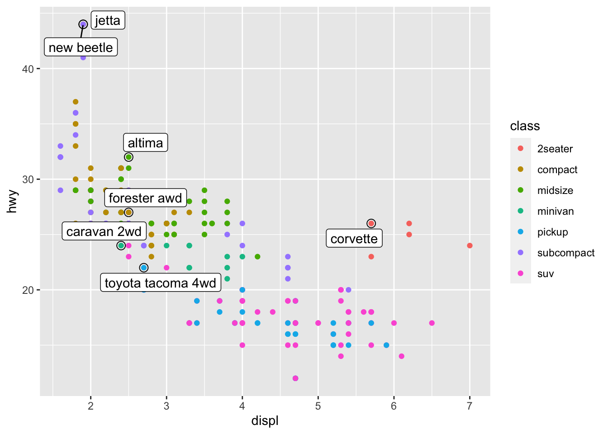
You can replace the legend with labels placed directly on the plot. If you want to add a single label to the plot, you’ll need to create a new data frame. Create a new data frame with summarise() to find max values of x and y. If you want the text in the borders of the plot, use +Inf and -Inf.
class_avg <- mpg %>%
group_by(class) %>%
summarise(
displ = median(displ),
hwy = median(hwy)
)
#> `summarise()` ungrouping output (override with `.groups` argument)
ggplot(mpg, aes(displ, hwy, colour = class)) +
ggrepel::geom_label_repel(aes(label = class),
data = class_avg,
size = 6,
label.size = 0,
segment.color = NA
) +
geom_point() +
theme(legend.position = "none")label <- mpg %>%
summarise(
displ = max(displ),
hwy = max(hwy),
label = "Increasing engine size is \nrelated to decreasing fuel economy."
)
ggplot(mpg, aes(displ, hwy)) +
geom_point() +
geom_text(aes(label = label), data = label, vjust = "top", hjust = "right")
label <- tibble(
displ = Inf,
hwy = Inf,
label = "Increasing engine size is \nrelated to decreasing fuel economy."
)
ggplot(mpg, aes(displ, hwy)) +
geom_point() +
geom_text(aes(label = label), data = label, vjust = "top", hjust = "right")
Break up label into lines using “”. Or, use stringr::str_wrap() to automatically add line breaks, given number of charaacters you want per line. hjust and vjust control the alignment of the label. geom_hline() and geom_vline add reference lines. geom_rect draws a rectange around points of interest – boundaries are defined by aesthetics xmin, xmax,ymin, ymax. Use geom_segment with the arrow argument to draw attn to a point with an arrow – use aesthetics x and y to define starting location, xend and y end to define end location.
label <- tribble(
~displ, ~hwy, ~label, ~vjust, ~hjust,
Inf, Inf, "Top right", "top", "right",
Inf, -Inf, "Bottom right", "bottom", "right",
-Inf, Inf, "Top left", "top", "left",
-Inf, -Inf, "Bottom left", "bottom", "left"
)
ggplot(mpg, aes(displ, hwy)) +
geom_point() +
geom_text(aes(label = label, vjust = vjust, hjust = hjust), data = label)For annotate, use what would be aesthetic mappings directly as arguments.
ggplot(mpg, aes(displ, hwy)) +
geom_point() +
annotate("text",
x = Inf, y = Inf,
label = "Increasing engine size is \nrelated to decreasing fuel economy.", vjust = "top", hjust = "right"
)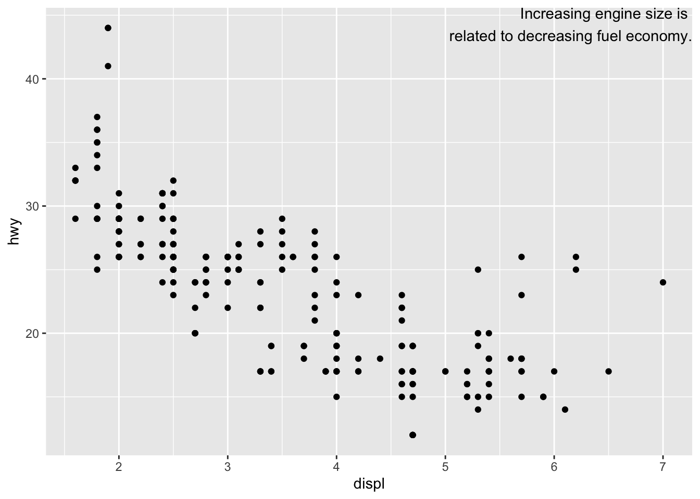
If the facet variable is not specified, the text is put in all facets. If you only want it in one facet, add a column to the label data frame with the value of the faceting variable in which to draw it. To draw labels in different plots, just make sure to have all the facetting variables.
label <- tibble(
displ = Inf,
hwy = Inf,
class = "2seater",
label = "Increasing engine size is \nrelated to decreasing fuel economy."
)
ggplot(mpg, aes(displ, hwy)) +
geom_point() +
geom_text(aes(label = label),
data = label, vjust = "top", hjust = "right",
size = 2
) +
facet_wrap(~class)label <- tibble(
displ = Inf,
hwy = Inf,
class = unique(mpg$class),
label = str_c("Label for ", class)
)
ggplot(mpg, aes(displ, hwy)) +
geom_point() +
geom_text(aes(label = label),
data = label, vjust = "top", hjust = "right",
size = 3
) +
facet_wrap(~class)You can change the appearance of geom_label using label.padding, label.r (amount of rounding), and label.size. The 4 arguments to arros are angle, length, ends, and type (either open or close).
Scales
Scales control the mapping from data values to things that you can perceive. Usually, ggplot automatically adds scales for you. There are 2 arguments that affect the appearance of ticks on the axes and the keys on the legend: breaks and labels. You can sent labels = NULL to suppress labels all together.If you have few data points, you can also highlight exactly where the observations occur using breaks. Date_labels takes a format specification, date_breaks takes a string (i.e. 2 days, 1 month, etc.
ggplot(mpg, aes(displ, hwy)) +
geom_point() +
scale_y_continuous(breaks = seq(15, 40, by = 5))
ggplot(mpg, aes(displ, hwy)) +
geom_point() +
scale_x_continuous(labels = NULL) +
scale_y_continuous(labels = NULL)
presidential %>%
mutate(id = 33 + row_number()) %>%
ggplot(aes(start, id)) +
geom_point() +
geom_segment(aes(xend = end, yend = id)) +
scale_x_date(NULL, breaks = presidential$start, date_labels = "'%y")
To control overall position of legend, use theme(). Theme setting legend.position controls where the legend is drawn. To control the display of individual legends, use guides() and guide_legend() or guide_colourbar().
base <- ggplot(mpg, aes(displ, hwy)) +
geom_point(aes(colour = class))
base + theme(legend.position = "left")
base + theme(legend.position = "top")
base + theme(legend.position = "bottom")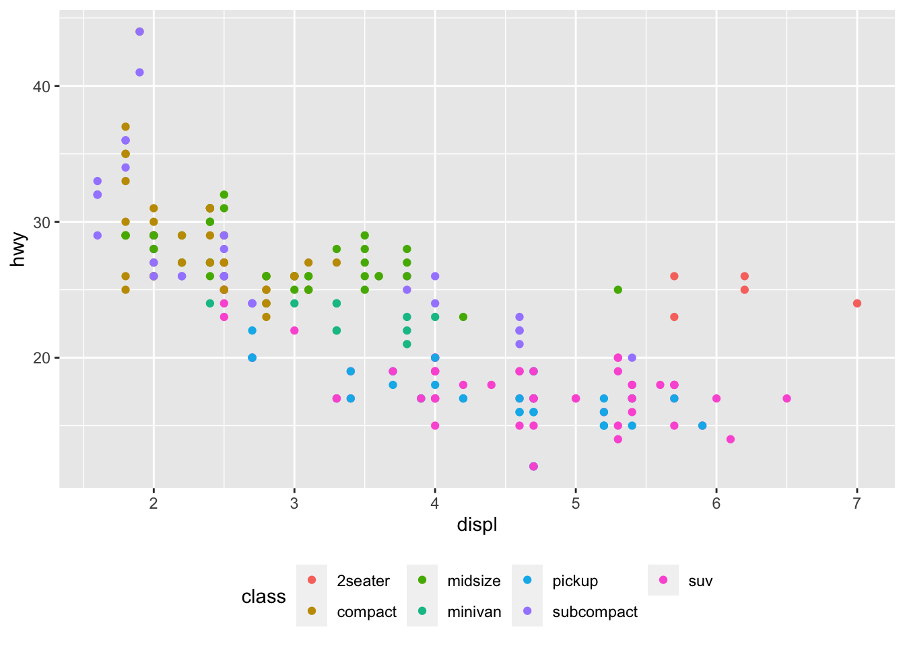
base + theme(legend.position = "right") # the default
ggplot(mpg, aes(displ, hwy)) +
geom_point(aes(colour = class)) +
geom_smooth(se = FALSE) +
theme(legend.position = "bottom") +
guides(colour = guide_legend(nrow = 1, override.aes = list(size = 4)))## `geom_smooth()` using method = 'loess' and formula 'y ~ x'
#> `geom_smooth()` using method = 'loess' and formula 'y ~ x'You can replace scales altogether. It is easier to see the relationship below if you log transform them, but these change the axes labels. Instead, we can do the transformation with the scale. We can change the color of the scale usig ColorBrewer scales to make it easier to interpret for those with red-green color blindness. You can also add shapes to make it even easier.
ggplot(diamonds, aes(carat, price)) +
geom_bin2d()
ggplot(diamonds, aes(log10(carat), log10(price))) +
geom_bin2d()
ggplot(diamonds, aes(carat, price)) +
geom_bin2d() +
scale_x_log10() +
scale_y_log10()
ggplot(mpg, aes(displ, hwy)) +
geom_point(aes(color = drv))
ggplot(mpg, aes(displ, hwy)) +
geom_point(aes(color = drv)) +
scale_colour_brewer(palette = "Set1")
ggplot(mpg, aes(displ, hwy)) +
geom_point(aes(color = drv, shape = drv)) +
scale_colour_brewer(palette = "Set1")
When you have a predefined mapping between values and colors, use scale_colour_manuel(). For continuous color, use scale_colour_gradient() or scale_fill_gradient(). If you have a diverging scale, use scale_colour_gradient2(). Also use scale_colour_viridis for good perceptual properties.
presidential %>%
mutate(id = 33 + row_number()) %>%
ggplot(aes(start, id, colour = party)) +
geom_point() +
geom_segment(aes(xend = end, yend = id)) +
scale_colour_manual(values = c(Republican = "red", Democratic = "blue"))
df <- tibble(
x = rnorm(10000),
y = rnorm(10000)
)
ggplot(df, aes(x, y)) +
geom_hex() +
coord_fixed()ggplot(df, aes(x, y)) +
geom_hex() +
viridis::scale_fill_viridis() +
coord_fixed()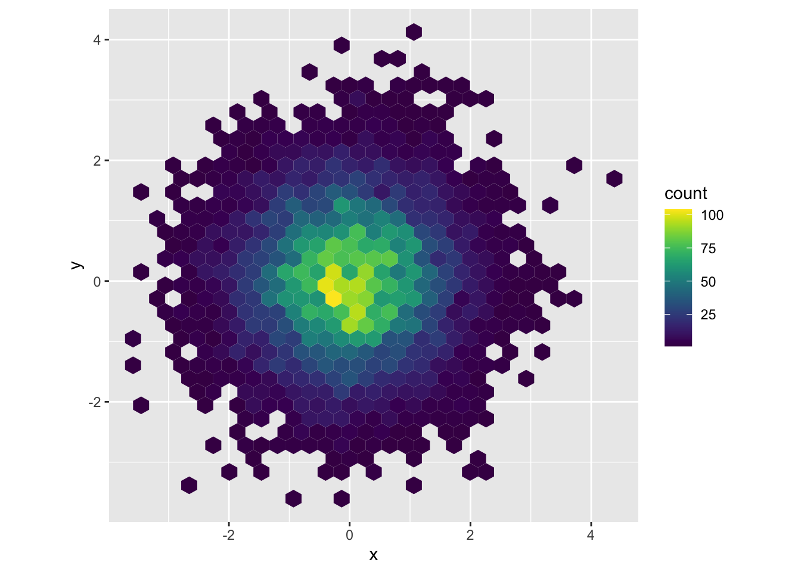
The following code does not override the default scale because the colors in geom_hex are set by the fill aesthetic, not the color aesthetic. Fix it as shown.
ggplot(df, aes(x, y)) +
geom_hex() +
scale_colour_gradient(low = "white", high = "red") +
coord_fixed()
ggplot(df, aes(x, y)) +
geom_hex() +
scale_fill_gradient(low = "white", high = "red") +
coord_fixed()
The first argument to every scale is the label for the scale. This is equivalent to using the labs() function.
presidential %>%
mutate(id = 33L + row_number()) %>%
ggplot(aes(start, id, colour = party)) +
geom_point() +
geom_segment(aes(xend = end, yend = id)) +
geom_text(aes(label = name), vjust = "bottom", nudge_y = 0.2)+
scale_colour_manual(values = c(Republican = "red", Democratic = "blue"))+
scale_x_date("Year in 20th and 21st century", date_breaks = "4 years", date_labels = "'%y")+
# scale_x_date(NULL, breaks = presidential$start, date_labels = "'%y")+
scale_y_continuous(breaks = c(36, 39, 42), labels = c("36th", "39th", "42nd"))+
labs(y = "President number", x = "Year")diamonds %>%
ggplot(aes(carat, price)) +
geom_point(aes(colour = cut), alpha = 1/20)+
guides(colour = guide_legend(override.aes = list(alpha = 1)))Zooming
Control plot limits by adjusting where data are plotted, setting limits in each scale, setting xlim and ylim in coord_cartesian. To zoom in on region of plot, use coord_cartesian().
ggplot(mpg, mapping = aes(displ, hwy)) +
geom_point(aes(color = class)) +
geom_smooth() +
coord_cartesian(xlim = c(5, 7), ylim = c(10, 30))## `geom_smooth()` using method = 'loess' and formula 'y ~ x'
mpg %>%
filter(displ >= 5, displ <= 7, hwy >= 10, hwy <= 30) %>%
ggplot(aes(displ, hwy)) +
geom_point(aes(color = class)) +
geom_smooth()## `geom_smooth()` using method = 'loess' and formula 'y ~ x'
Can also set limits on individual scales.This makes it easier to compare plots.
suv <- mpg %>% filter(class == "suv")
compact <- mpg %>% filter(class == "compact")
ggplot(suv, aes(displ, hwy, colour = drv)) +
geom_point()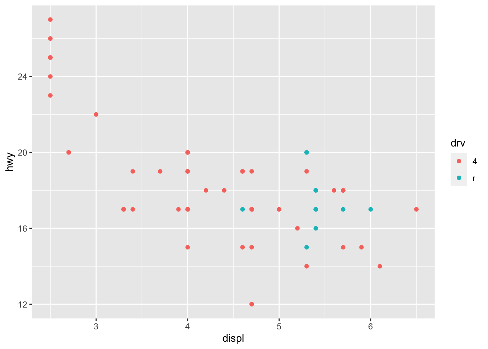
ggplot(compact, aes(displ, hwy, colour = drv)) +
geom_point()
x_scale <- scale_x_continuous(limits = range(mpg$displ))
y_scale <- scale_y_continuous(limits = range(mpg$hwy))
col_scale <- scale_colour_discrete(limits = unique(mpg$drv))
ggplot(suv, aes(displ, hwy, colour = drv)) +
geom_point() +
x_scale +
y_scale +
col_scale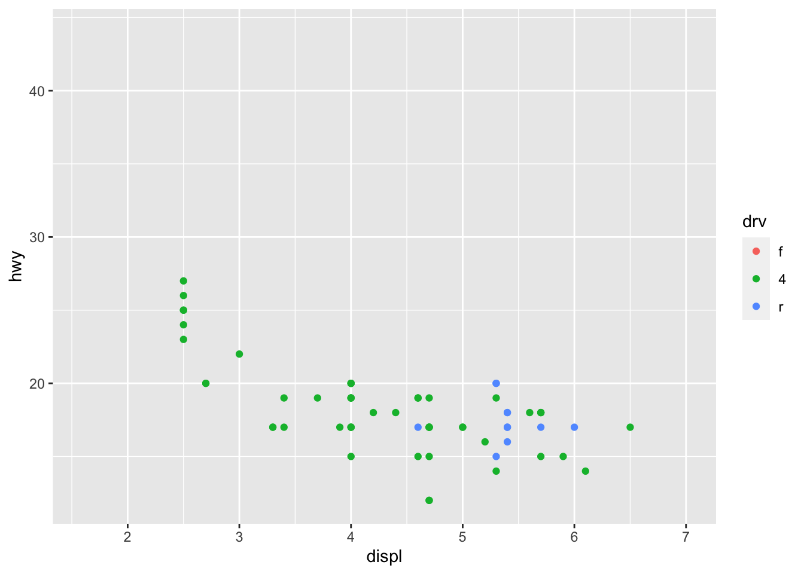
ggplot(compact, aes(displ, hwy, colour = drv)) +
geom_point() +
x_scale +
y_scale +
col_scale
Themes
You can customise non-data elements of your plot with a theme.
ggplot(mpg, aes(displ, hwy)) +
geom_point(aes(color = class)) +
geom_smooth(se = FALSE) +
theme_bw()## `geom_smooth()` using method = 'loess' and formula 'y ~ x'
Saving your plots
Use ggsave() and knitr to get plots out of R and into final write up. ggsave() will save the most recent plot to disk. To change figure sizing, use fig.width, fig.height, fig.asp, out.width, and out.height. If you want to make the font size consistent across all figures, whenever you set out.width, you’ll also need to adjust fig.width to maintain the same ratio with your default out.width. You can set fig.show = “hold” so that plots are shown after the code, which lets you break up large blocks of code with their explanations. To add a caption to the plot, use fig.cap.
ggplot(mpg, aes(displ, hwy)) + geom_point()
#ggsave("my-plot.pdf")
#> Saving 7 x 4.33 in imageFinal Project
Crime Distributions At Ivy League Institutions
1 INTRODUCTION
At the University level, it is important that crime trends are observed in relation to the external factors that may have an effect. Ivy League universities, being private institutions that receive billions of dollars in endowments, should have ample measures in place to control crime rates on campus to maintain the safety of students. In this report, we will observe the total crime trends between the University of Pennsylvania, Yale University, and Columbia University and then take a more specific look at sexual offense trends. These trends will be compared with external research that analyzes police funding and the implementation of Title IX. Ultimately, it is important that more causal research is conducted in this area to observe whether it is beneficial to have privately funded university police departments and whether to bolster Title IX power. The data used in this report contain the total crime data from 2001-2017 for the three Ivy League institutions mentioned above.
2 EXPLORATORY DATA ANALYSIS
2.1 DATA DESCRIPTION
The selected dataset was compiled data from Jacob Kaplan on total crimes reported at Universities. All of the data comes from the Department of Education Office of Postsecondary Education, which collects crime data from colleges. The following variables were the focus of the analysis: total number of aggravated assault, total number of arson, total number of motor vehicle theft, total number of non-negligent manslaughter, total number of negligent manslaughter, total number of sex offenses. The variables total number of on campus sex crimes and total number of off campus sex crimes were explored as well. All datasets used for this analysis individually contain 17 years of data with 1039 observations.
2.2 MISSING VALUES
There are many missing values because, different from the value of 0, there are crime “categories” that do not have any reported crime data for certain years. For example, looking at the University of Pennsylvania data, there is no data for off-campus rape crimes until 2014. This will affect our data analysis, because the crime statistics may seem lower than they actually are.
2.3 UNIVERSITY LOCATIONS
The three universities are located in urban settings. University of Pennsylvania is located in Philadelphia, PA (2019 pop. = 1.58 million). Columbia University is located in New York City, NY (2019 pop. = 8.33 million). Yale University is in New Haven, CT (2019 pop. = 130,250). All population data was retrieved from the US census population estimates.
2.4 CAMPUS POLICE FORCE
The University of Pennsylvania’s Division of Public Safety (DPS) comprises 180 personnel and 121 of these are sworn-in University of Pennsylvania police officers. The Yale Police Department (YPD) comprises 93 sworn-in police officers. Due to New York regulations, Columbia University has 147 full-time security officers and no sworn-in officers. These security officers cannot carry firearms or arrest individuals, but they can detain suspected criminals on the University property. However, Columbia University is in the 26th precinct of the NYPD.
2.5 TOTAL CRIMES PER YEAR
yale <- read.csv("/Users/rachaelvillari/Documents/Fall 2021/CRIM250/Final Project/jacobdkaplan.com_school_count_Yale University.csv")
upenn <- read.csv("/Users/rachaelvillari/Documents/Fall 2021/CRIM250/Final Project/jacobdkaplan.com_school_count_University of Pennsylvania (1).csv")
nyc <- read.csv("/Users/rachaelvillari/Documents/Fall 2021/CRIM250/Final Project/jacobdkaplan.com_school_count_Columbia University in the City of New York.csv")
plot(upenn$year,upenn$crimes_total_total, type = "b", main="Scatterplot of total number of reported crimes at UPenn from 2001-2017", xlab="Year", ylab="Number of offenses reported to police", cex.axis=0.75, ylim = c(0,300))
axis(1, at=seq(2001,2017,1), cex.axis=0.75)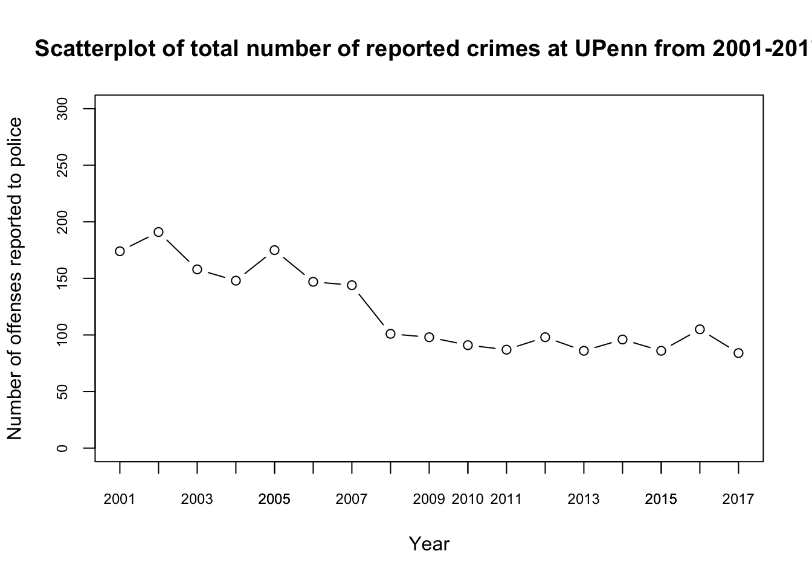
plot(yale$year,yale$crimes_total_total, type = "b", main="Scatterplot of total number of reported crimes at Yale from 2001-2017", xlab="Year", ylab="Number of offenses reported to police", cex.axis=0.75, ylim = c(0,300))
axis(1, at=seq(2001,2017,1), cex.axis=0.75)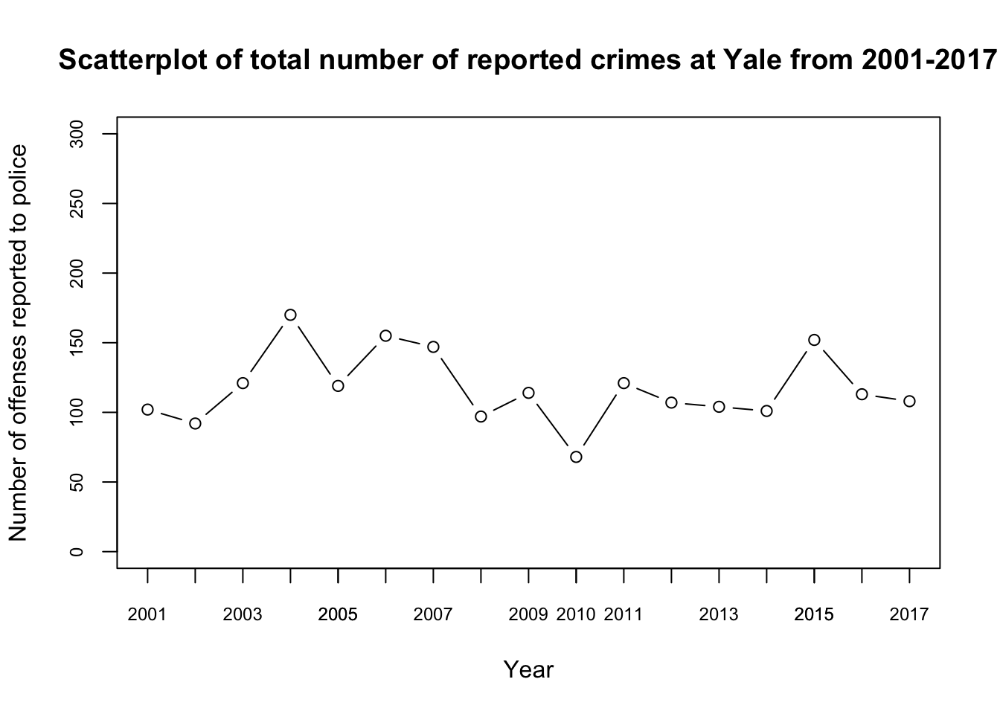
plot(nyc$year,nyc$crimes_total_total, type = "b", main="Scatterplot of total number of reported crimes at Yale from 2001-2017", xlab="Year", ylab="Number of offenses reported to police", cex.axis=0.75, ylim = c(0,300))
axis(1, at=seq(2001,2017,1), cex.axis=0.75)2.6 AVERAGE OF TOTAL SEX OFFENSES PER YEAR
plot(upenn$year,upenn$crimes_total_sex_offenses_total, type = "b", main="Scatterplot of total number of reported \nsex offenses at UPenn from 2001-2017", xlab="Year", ylab="Number of offenses reported to police", cex.axis=0.75, ylim = c(0,35))
axis(1, at=seq(2001,2017,1), cex.axis=0.75)plot(yale$year,yale$crimes_total_sex_offenses_total, type = "b", main="Scatterplot of total number of reported \nsex offenses at Yale from 2001-2017", xlab="Year", ylab="Number of offenses reported to police", cex.axis=0.75, ylim = c(0,35))
axis(1, at=seq(2001,2017,1), cex.axis=0.75)plot(nyc$year,nyc$crimes_total_sex_offenses_total, type = "b", main="Scatterplot of total number of reported \nsex offenses at Columbia from 2001-2017", xlab="Year", ylab="Number of offenses reported to police", cex.axis=0.75, ylim = c(0,35))
axis(1, at=seq(2001,2017,1), cex.axis=0.75)
2.7 DIFFERENCES BY ON/OFF CAMPUS
2.7.1 ON CAMPUS SEX OFFENSES
plot(upenn$year,upenn$crimes_on_campus_sex_offenses_total, type = "b", main="Scatterplot of total number of reported on campus \nsex offenses at UPenn from 2001-2017", xlab="Year", ylab="Number of offenses reported to police", cex.axis=0.75, ylim = c(0,35))
axis(1, at=seq(2001,2017,1), cex.axis=0.75)plot(yale$year,yale$crimes_on_campus_sex_offenses_total, type = "b", main="Scatterplot of total number of reported on campus \nsex offenses at Yale from 2001-2017", xlab="Year", ylab="Number of offenses reported to police", cex.axis=0.75, ylim = c(0,35))
axis(1, at=seq(2001,2017,1), cex.axis=0.75)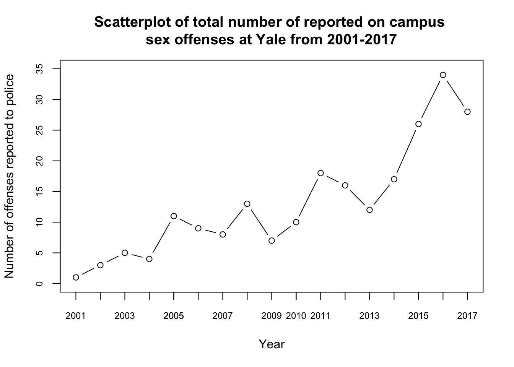
plot(nyc$year,nyc$crimes_on_campus_sex_offenses_total, type = "b", main="Scatterplot of total number of reported on campus \nsex offenses at Columbia from 2001-2017", xlab="Year", ylab="Number of offenses reported to police", cex.axis=0.75, ylim = c(0,35))
axis(1, at=seq(2001,2017,1), cex.axis=0.75)
2.7.2 OFF CAMPUS SEX OFFENSES
plot(upenn$year,upenn$crimes_noncampus_sex_offenses_total, type = "b", main="Scatterplot of total number of reported off campus \nsex offenses at UPenn from 2001-2017", xlab="Year", ylab="Number of offenses reported to police", cex.axis=0.75, ylim=c(0,5))
axis(1, at=seq(2001,2017,1), cex.axis=0.75)plot(yale$year,yale$crimes_noncampus_sex_offenses_total, type = "b", main="Scatterplot of total number of reported off campus \nsex offenses at Yale from 2001-2017", xlab="Year", ylab="Number of offenses reported to police", cex.axis=0.75, ylim=c(0,5))
axis(1, at=seq(2001,2017,1), cex.axis=0.75)plot(nyc$year,nyc$crimes_noncampus_sex_offenses_total, type = "b", main="Scatterplot of total number of reported off campus \nsex offenses at Columbia from 2001-2017", xlab="Year", ylab="Number of offenses reported to police", cex.axis=0.75, ylim=c(0,5))
axis(1, at=seq(2001,2017,1), cex.axis=0.75)2.8 DIFFERENCES IN DIFFERENT CRIME TYPES
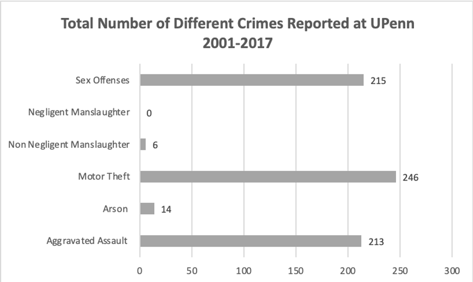
3 CAUSAL ANALYSIS
3.1 CAUSAL PARAMETER OF INTEREST
The causal parameters of interest are the size and funding of the police forces of the three Ivy League institutions: University of Pennsylvania, Yale University, and Columbia University. Additionally, we note the effect of Title IX guidelines on the sexual offense trends. While Columbia has 147 security officers rather than a private police force, Columbia benefits from the NYPD as they are located in the 26th precinct. Due to the size and power of the NYPD, Columbia’s total crime trend could be more reflective of the crime trends in the surrounding New York area. UPenn has a private police force of 121 sworn officers, which receives 27 million dollars of funding. UPenn’s negative crime trend could be a result of the robust size and funding of the police force, but without causal analysis and true experiments that include randomization, it is unclear whether this external factor has a relevant impact. Finally, on-campus sexual offense trends could be influenced by the causal parameter of Title IX guidelines and their implementation in university proceedings surrounding sexual offense cases. Title IX allows increased protections and assurance of investigation for on-campus students, which could possibly explain the high reporting rates for sexual offenses. Conversely, Title IX guidelines limit protections in off campus offenses noted in our discussion section. It is important to note that these causal parameters can only be hypothesized as we do not have sufficient data to analyze whether they play an influential role in our EDA of the crime distributions of the three Ivy Leagues explored.
3.2 PROPOSED CAUSAL DAG
The proposed causal DAG consists of two actions, the outcomes of the actions, and the confounding variables that may impact both the actions and the outcomes. In our case of understanding the crime distribution of the Columbia, Yale, and UPenn, the actions that influence the crime reporting rates are the strength and presence of the campus funded police force and Title IX when regarding the reporting of sex offenses. The expected outcomes of higher funding and strong on campus police force would seemingly decrease total crime rates whereas decreased funding and smaller police force would result in higher crime. Title IX’s on-campus guidelines would result in higher crime reporting of sex offenses due to increased victim protection whereas their off campus guidelines would result in decreased reporting. However, the confounding variables that may impact both these actions and outcomes are reporting bias, in that there may be failure to report by police offices as well as failure to report by victim (sex assault), and the danger of the location of the school.
4 DISCUSSION
We wanted to determine whether 1) There was a significant difference in total crime rates and sexual offenses between three different urban, Ivy League institutions, and 2) if police size and funding, and Title IX guidelines influenced this relationship. Due to a lack of sufficient data on which we could perform linear regression to explore the correlation between these two actions (police funding and Title IX guidelines), it is unclear whether they have an impact on the total crime trends and sexual offense rates at any of the Ivy Leagues we analyzed. However, overall, we found that the University of Pennsylvania had the highest total number of reported crimes from 2001-2017, with a total of 2069 crimes compared to Yale (1991) and Columbia (1589). It is important to note that Columbia had two years of missing data, which could change how its crime rates actually compare to the other universities. Yale University had the highest number of reported sex offenses (246) compared to Columbia University (196) and University of Pennsylvania (216). We find this especially interesting because UPenn has the highest crime rate, despite having the largest number of on-campus sworn-in officers. Additionally, it is intriguing that Yale University is located in the smallest city (population =130,250) of the three schools analyzed, but still has the highest number of reported sex offenses. Yale University also has the lowest police force funding ($10 million), despite having the largest endowment ($42.3 billion) of the three Ivies. We also found that almost all sex offenses reported to the respective campus police forces occurred on campus, rather than off campus. It is possible that this is because off-campus sex offenses are reported to the city police forces. In terms of Title IX providing explanation for the stark difference between on campus and off campus sexual offense trends, new Title IX guidelines do not require universities to investigate events that occur off campus. Therefore, there could ultimately be higher off campus sexual offense trends due to lack of investigation by universities. Our results have some limitations. The Columbia University data set was missing crime data for 2002 and 2004. The data sets that we used were subject to reporting bias and missing data. Failure to report by police officers and failure to report by victim, which is especially prevalent with sexual assault cases, has an effect on the total number of crimes reported, as well as the total number of sexual offenses reported.In addition, due to limited data, we only used scatter and box plots to compare the crime distribution and analyze the relationship between police force funding, Title IX enactment, and crime distribution. The use of linear regression would allow for strong analysis between these variables.